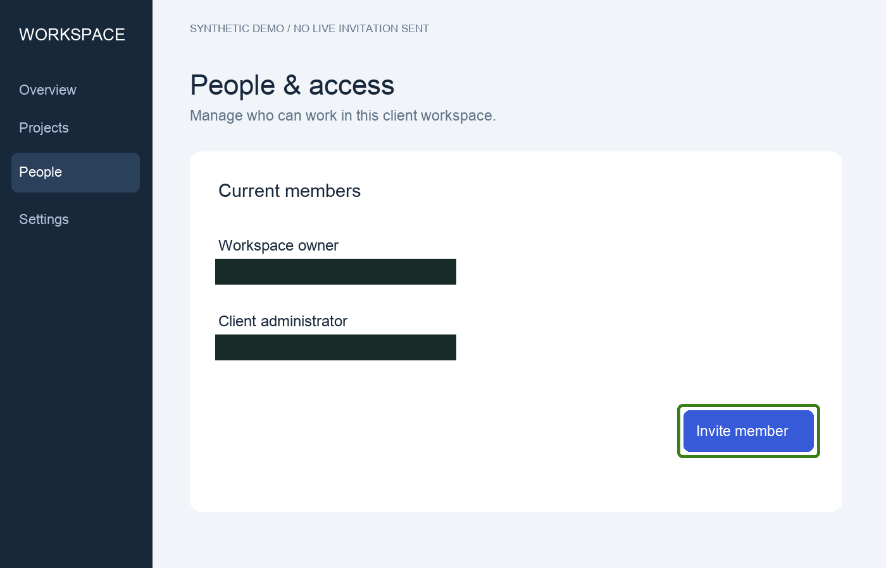
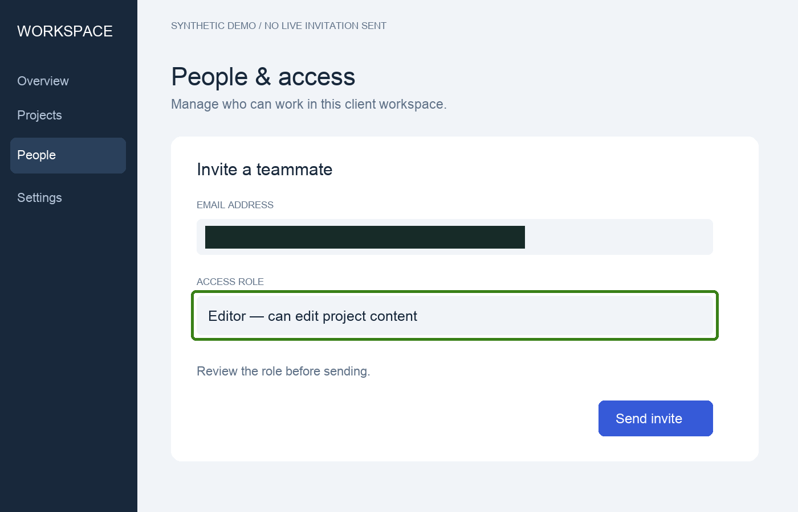
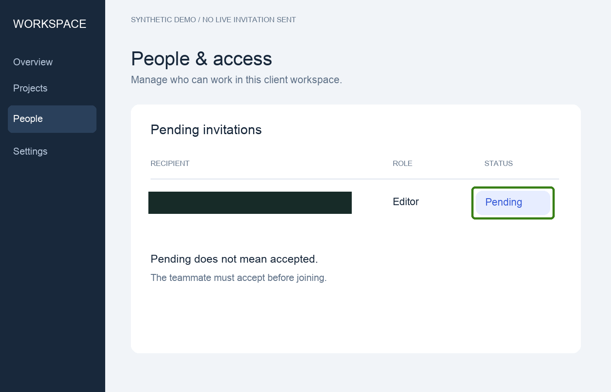

FIELD GUIDE / EVIDENCE FIRST
Invite a teammate to your client workspace
A client administrator receiving a consultant handover.
Before you start: Use a workspace where you are authorized to manage members. This example uses a fictional UI; labels may differ in your actual product.
Technical export complete. Privacy and behavioral review remain separate.
Open People in workspace settings
Expected: The member list and Invite member action are visible.
Observed: The synthetic screenshot shows two current members and an invitation button.
Evidence: synthetic-demo — Fictional UI fixture; no live account action or email delivery was performed.

Enter the recipient and review the Editor role
Expected: The intended email and access role are set before the invitation is sent.
Observed: The synthetic draft has an email value and the Editor role selected; it is not yet sent.
Evidence: synthetic-demo — Fictional UI fixture; no live account action or email delivery was performed.

Send the invitation and check its pending status
Expected: The intended recipient appears with the Editor role and a Pending status.
Observed: The synthetic final state shows Editor and Pending. It does not establish acceptance or actual delivery.
Evidence: synthetic-demo — Fictional UI fixture; no live account action or email delivery was performed.
